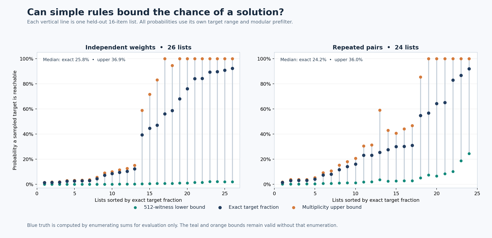
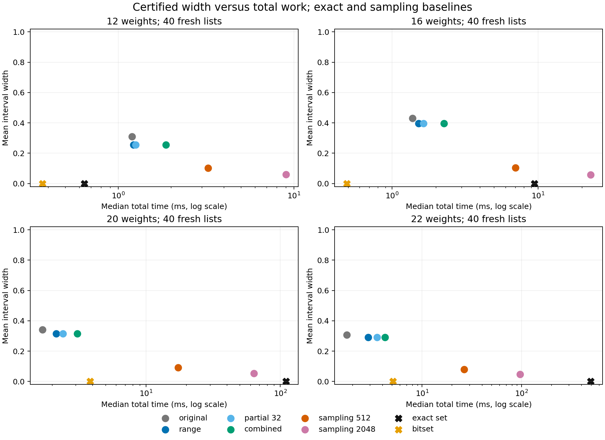

Probability-Valued Subset Sum: Certified Bounds and Learned Guidance
Abstract. For fixed positive integer weights and a specified random target, we bound the probability that a subset reaches it. Witnesses and sound exclusions give an initial deterministic interval. Counting half-sum pairs in the target range and subtracting certified collision overcounting yields a stronger interval, with integer-strengthened endpoints and a residue matching cap. The range correction reproduces \(13.10\%\) mean per-list narrowing on \(1{,}000\) lists. On \(160\) fresh lists of sizes \(12\)–\(22\), range counting removes \(14.15\%\) of interval width on average; the tested collision and residue refinements raise this to \(14.19\%\), with every deterministic interval containing the truth. Separately, calibrated learning removes \(76.96\%\) on matched data with \(97.5\%\) coverage, but coverage falls to \(88.75\%\) on larger lists. Exact bitset computation often finishes faster. The theory certifies tightening; the experiments expose the cost of obtaining strong certificates and establish no broad speed advantage.
The probability requires a random experiment
For a fixed list of \(n\) positive integer weights \(w=(w_1,\ldots,w_n)\) and an integer target \(t\), let each \(x_i\in\{0,1\}\) indicate whether weight \(w_i\) is selected. The decision answer \[Y(w,t)=\mathbf{1}\!\left\{t=\sum_{i=1}^n x_iw_i \text{ for some }x\in\{0,1\}^n\right\}\] is exactly \(0\) or \(1\); \(\mathbf{1}\{\cdot\}\) is \(1\) when the condition holds and \(0\) otherwise. To obtain a probability, let \(D\) be a nonempty finite target set, \(T\) a random target with distribution \(\mu\) supported on \(D\), and \(\mu(t)=\Pr(T=t)\) its mass at target \(t\). Define the reachable-sum set \[\mathcal A(w)=\left\{\sum_{i=1}^n x_iw_i:x\in\{0,1\}^n\right\}.\]
\[q_\mu(w)=\Pr_{T\sim\mu}[Y(w,T)=1] =\sum_{t\in\mathcal A(w)\cap D}\mu(t).\]
For a uniform target, \(q_\mu(w)=|\mathcal A(w)\cap D|/|D|\). Thus the new outcome is the chance that a target drawn by a stated rule is reachable. Changing \(D\) or \(\mu\) changes the question; the probability is not uncertainty about a fixed target.
Bounds that remain correct for one list
Let \(L\subseteq\mathcal A(w)\cap D\) be distinct sums with explicit subset witnesses. For a positive modulus \(m\), let \(R_m(w)=\{a\bmod m:a\in\mathcal A(w)\}\). Given a finite collection \(\mathcal M\) of moduli, define \[U=D\cap\bigcap_{m\in\mathcal M}\{t:t\bmod m\in R_m(w)\}.\] For any \(B\subseteq D\), write \(\mu(B)=\sum_{t\in B}\mu(t)\) for its target probability mass.
Proposition 1 (Certified probability interval). For every \(w,D,\mu,L,\mathcal M\) defined above, \[\mu(L)\le q_\mu(w)\le\mu(U).\]
Proof. Every witnessed sum belongs to \(\mathcal A(w)\), giving \(L\subseteq\mathcal A(w)\cap D\). Every attainable sum has an attainable residue modulo every \(m\in\mathcal M\), giving \(\mathcal A(w)\cap D\subseteq U\). Monotonicity of probability mass proves both inequalities. \(\square\)
Repeated values give another cheap bound. Index the distinct weight values by \(j\), writing \(v_j\) for each value and \(c_j\) for its multiplicity. One may choose \(0,\ldots,c_j\) copies of \(v_j\). Hence \[|\mathcal A(w)|\le K(w):=\prod_j(c_j+1).\] For a uniform target on \(D\), combine the two upper bounds:
\[\frac{|L|}{|D|}\le q_\mu(w)\le \min\left\{\frac{|U|}{|D|},\,\frac{K(w)}{|D|},\,1\right\}.\]
The count \(K(w)\) is only an upper bound: different count vectors may have the same sum. Exact paired summaries can enlarge \(L\), but their distinct union must be counted, and their construction cost must be charged. More sound exclusions can shrink \(U\).
For a chosen tolerance \(\varepsilon>0\), the interval certifies an additive-\(\varepsilon\) answer whenever its width is at most \(\varepsilon\). Exact \(q_\mu\) requires zero width. This is the probability analogue of the first note’s costed coverage idea: bound quality matters together with the cost of producing it.
Range and collision certificates
The remainder of the combinatorial refinement assumes a uniform target on \(D\). Write \(d=|D|\) and \(N=|\mathcal A(w)\cap D|\), so \(q=N/d\). Partition the weights into two blocks with distinct attainable-sum sets \(A,B\), including zero. Define \[r(t)=|\{(a,b)\in A\times B:a+b=t\}|,\qquad M=\sum_{t\in D}r(t),\qquad J=\sum_{t\in D}\binom{r(t)}2.\] Here \(M\) counts representations that land in the target set, and \(J\) counts unordered collisions between representations of the same target. Every reachable target has a representation, so \(N\le M\).
Keep all copies of each repeated weight value in one block. Each block’s distinct sums are bounded by its number of count patterns, giving \[N\le M\le |A||B|\le K(w).\] The final comparison requires this grouping rule: splitting two copies of weight \(1\) across blocks gives four pairs but only \(K=3\) global count patterns. The representation identities below remain valid for arbitrary index partitions.
For interval targets, sorted half-sum lists give \(M\) by two binary searches per \(a\in A\), without listing all pair sums. For the experiment’s residue-filtered interval, every attainable pair sum already passes the residue screens, so the same count is valid. Other target sets require their membership restrictions to be accounted for explicitly.
Let \(N_0^-\le N\le N_0^+\) be existing integer support bounds, with \(0\le N_0^-\le N_0^+\le d\). For example, \(N_0^-=|L|\) and \(N_0^+=\min\{|U|,K,d\}\).
Proposition 2 (Integer range and collision refinement). Suppose \(J_-\le J\le J_+\) are certified nonnegative integer bounds and \(R\ge\max_{t\in D}r(t)\) is a positive integer. For \(M>0\), set \[\begin{aligned} N_-&=\max\left\{N_0^-,M-J_+, \left\lceil\frac{M^2}{M+2J_+}\right\rceil, \left\lceil\frac M R\right\rceil\right\},\\ N_+&=\min\left\{N_0^+,d,M-\left\lceil\frac{2J_-}{R}\right\rceil\right\}. \end{aligned}\] Then \(N_-\le N\le N_+\), hence \(N_-/d\le q\le N_+/d\). If \(M=0\), then \(N=q=0\).
Proof. The identities \[M-N=\sum_{\substack{t\in D\\r(t)>0}}(r(t)-1),\qquad \sum_{t\in D}r(t)^2=M+2J\] imply \(N\ge M-J\), since \(r-1\le\binom r2\) for positive integers. Cauchy–Schwarz gives \(M^2\le N(M+2J)\); also \(M\le RN\). For the upper endpoint, \[2J=\sum_{t\in D}r(t)(r(t)-1)\le R(M-N).\] Substitute \(J_+\) in the lower bounds and \(J_-\) in the upper bound, round the integer support endpoints, and intersect with the existing interval. \(\square\)
The uncapped count-bound slack consequently satisfies \[\frac Kd-q\ge\frac{K-M+2J_-/R}{d}.\] Thus range exclusion and certified collision counting remove specified parts of the original overcount. No learning or calibration is required. The improvement can be zero; validity alone does not guarantee a large correction. Estimated collision counts or an estimated maximum cannot replace the certificates in Proposition 2.
For example, take weights \((10,20,30,100)\), blocks \((10,20)\) and \((30,100)\), and \(D=\{20,\ldots,120\}\). Direct small-case checking gives \(d=101,K=16,M=9,J=1,R=2\). Both endpoints in Proposition 2 equal \(8/101\), improving the original upper bound \(16/101\).
Obtaining collision and representation certificates
For positive integer differences \(\delta\), define \[A_\delta=\{a\in A:a+\delta\in A\},\qquad B_\delta=\{b\in B:b-\delta\in B\}.\] Then the exact collision identity is \[J=\sum_{\delta>0} |\{(a,b)\in A_\delta\times B_\delta:a+b\in D\}|.\] Each unordered collision has unique ordered \(A\) coordinates \(a<a+\delta\); equality of the sums forces the \(B\) coordinates to be \(b>b-\delta\). This is a bijection with the displayed terms. Summing any set of distinct positive differences gives a valid \(J_-\). Membership checks and interval searches can count each selected term without materializing its Cartesian product.
A universal upper certificate follows from the cap \(R\). Write \(M=hR+s\), \(0\le s<R\). Then \[J\le J_+:=h\binom R2+\binom s2\le\frac{(R-1)M}{2}.\] To prove this, move mass between integer cell occupancies until every positive cell except at most one is full. Convexity of \(\binom r2\) makes each such move nondecreasing in total collisions. Allowing arbitrary cell arrangements only enlarges the feasible class.
Residue matching cap. Always \(R=\min(|A|,|B|)\) is safe. For a modulus \(m\), let \(a_i,b_i\) count half sums in residue \(i\). For each fixed target, \(b=t-a\) is uniquely determined by \(a\), and vice versa. Thus exact-sum pairs within each residue class form an injective matching, giving \[r(t)\le H_m(t\bmod m),\qquad H_m(s)=\sum_{i=0}^{m-1}\min\{a_i,b_{(s-i)\bmod m}\}.\] The minimum of the basic cap and \(\max_s H_m(s)\) for any chosen moduli remains certified. The implementation uses \(m=16,64\), with exact integer arithmetic. This cap is at least as strong as the residue-pair product bound \(\sum_i a_i b_{(s-i)\bmod m}\).
Half-sum construction can remain exponential. After sorting, range counting takes \(O(|A|\log|B|)\) operations; checking \(k\) differences takes at most \(O(k(|A|+|B|+|A|\log|B|))\), with linear auxiliary space per difference. The matching cap costs \(O(|A|+|B|+m^2)\) per modulus. These count arithmetic operations; integer bit costs need not be constant. Adaptive selection of verified certificates preserves validity, but all selection and construction work must be charged.
The initial check of bound quality
We reused the held-out \(n=16\) lists from the classifier experiment in note II. For each of \(50\) lists, the target set \(D\) was the integer middle \(40\%\) of the list’s total sum, restricted to targets that passed the experiment’s residue tests modulo \(8,10,16,32\). Conditional on that filter, targets were drawn uniformly from \(D\). The same residue tests therefore supply no further upper-bound reduction on this particular \(D\).
The lower bound used distinct sums from \(512\) randomly sampled subsets; the upper bound used \(K(w)/|D|\). We enumerated all attainable sums to measure the exact \(q_\mu(w)\) for evaluation only. Each computed interval contained the exact value.
| Family | Lists | Witness lower | Exact \(q_\mu\) | Count upper |
|---|---|---|---|---|
| Independent weights | 26 | \(0.3\%\) | \(25.8\%\) | \(36.9\%\) |
| Repeated pairs | 24 | \(2.2\%\) | \(24.2\%\) | \(36.0\%\) |
| All lists | 50 | \(0.8\%\) | \(24.2\%\) | \(36.0\%\) |

These bounds do not claim a runtime improvement. They show that counting possible selections can sometimes limit the probability without deciding each target, while a small witness budget leaves much of the mass unresolved.
Per-target statistical probabilities and guidance
The classifier in note II outputs \(\widehat p(w,t)\), its estimated YES chance from a feature vector \(\phi(w,t)\). For a random list-target pair \((W,T)\) from the experiment’s input distribution, the statistical quantity being estimated is \(\Pr(Y(W,T)=1\mid\phi(W,T)=\phi(w,t))\). This differs from the exact \(q_\mu(w)\) for one fixed list: \(Y(w,t)\) is fixed once its full instance is known.
The held-out experiment drew four targets per independent list. Its \(229\) YES answers among \(720\) targets give an observed rate of \(31.8\%\) across the \(180\) held-out lists. A \(95\%\) bootstrap interval resampling whole lists is \(26.9\%\)–\(36.7\%\). Treating each list’s four-target average as one bounded independent observation gives a wider Hoeffding \(95\%\) interval of \(21.7\%\)–\(41.9\%\) for the mean success rate across that test schedule. On \(240\) unseen \(n=24\) lists, the observed rate was \(25.0\%\) across \(960\) targets; the list-bootstrap interval was \(20.9\%\)–\(29.2\%\). These rates depend on the synthetic list and target generators.
For a fixed list, draw \(m\) independent targets from \(\mu\), label them exactly, and let \(\widehat q\) be the fraction labeled YES. For any \(\varepsilon>0\), the standard sampling bound is \[\Pr\{|\widehat q-q_\mu(w)|>\varepsilon\}\le 2e^{-2m\varepsilon^2}.\] The probability here is over the \(m\) target draws. The exact-label cost remains. Sampling uncertainty intervals are different from Proposition 1’s deterministic bounds.
At the classifier threshold \(\widehat p\le1\%\), \(2\) of \(43\) held-out proposed NO answers were actually YES. The list-bootstrap interval for that conditional error fraction was \(0\%\)–\(10.7\%\); its zero lower endpoint does not certify zero future risk. A learned score can order which witnesses or certificates to seek, but cannot itself certify a NO decision.
Calibrated refinement across weight lists
A separate experiment predicts the reachable-target fraction of a whole list, rather than individual target decisions. Start with deterministic endpoints \(\ell(w)\le q(w)\le u(w)\), and write \(W(w)=u(w)-\ell(w)\). For \(W>0\), learn the normalized position \[\rho(w)=\frac{q(w)-\ell(w)}{W(w)},\qquad \widehat q(w)=\ell(w)+p(w)W(w),\quad 0\le p(w)\le1.\] On a separate calibration sample, form one-sided scores \[s^-=\frac{(\widehat q-q)_+}{W},\qquad s^+=\frac{(q-\widehat q)_+}{W}.\] Collapsed intervals return their exact value and contribute zero scores. For \(m\) calibration lists, take the score of rank \(\lceil(m+1)(1-\alpha/2)\rceil\) in each tail, or \(+\infty\) when that rank exceeds \(m\), obtaining \(c^-,c^+\). Define \[I_*(w)=\left[ \max\{\ell,\widehat q-c^-W\},\, \min\{u,\widehat q+c^+W\}\right].\] Conditional on the fitted predictor, exchangeability of calibration and new lists makes the new score’s rank uniform up to conservative handling of ties. Each tail fails with probability at most \(\alpha/2\); a union bound gives \(\Pr\{q(w)\in I_*(w)\}\ge1-\alpha\). This is marginal coverage across weight lists, not a deterministic certificate for each list or a guarantee after selecting a subgroup.
For finite allowances, the algebraic width identity is \[\frac{|I_*|}{W}=\min\{p,c^-\}+\min\{1-p,c^+\} \le\min\{1,c^-+c^+\}.\] It guarantees shrinkage for fixed allowances, independently of whether the new interval contains the truth. It does not convert statistical coverage into the pointwise containment of Proposition 2.
The frozen experiment used \(1{,}200\) training, \(500\) calibration, and \(1{,}000\) fresh test lists with \(16\) weights, plus a prespecified \(240\)-list \(20\)-weight size-transfer diagnostic. Each list independently selected the independent-weight or repeated-pair generator with equal probability, retaining the middle-\(40\%\), residue-filtered target rule. The original analytic interval used \(512\) subset witnesses and the multiplicity upper bound. Exact fractions supplied labels, not test features. The fixed structural predictor was a histogram gradient-boosted regressor with \(200\) iterations, at most \(15\) leaves, learning rate \(0.05\), minimum leaf size \(20\), and \(L^2\) regularization \(1\). The density baseline used quadratic ridge regression on three cheap features; the midpoint predicted \(p=1/2\). No tuning or recalibration followed test inspection. At \(\alpha=0.05\), each calibration rank was \(489\).
| Center | Width removed, \(n=16\) | Covered, \(n=16\) | Covered, \(n=20\) |
|---|---|---|---|
| Structural model | 76.96% | 975/1000 | 213/240 |
| Density baseline | 73.95% | 972/1000 | 237/240 |
| Midpoint | 56.79% | 961/1000 | 239/240 |
For the structural model, \(c^-=0.132124\) and \(c^+=0.099358\). Matched coverage was \(97.5\%\), but larger-list coverage was \(88.75\%\), below the intended \(95\%\). All \(25\) matched misses occurred among repeated-pair lists. The size shift removes the exchangeability justification. Successful transfer of the simpler baselines is an empirical observation, not a universal robustness guarantee. Intersecting a valid statistical interval with an always-valid deterministic interval preserves its original marginal coverage; it does not repair this observed transfer failure. Refitting normalized residuals inside a changed envelope requires new training and calibration or a separate justification.
Deterministic reproduction and prospective cost study
On the already-inspected \(1{,}000\)-list matched cohort, range counting reproduced \(778\) strict upper-endpoint improvements and \(13.10\%\) mean per-list narrowing, with every interval containing the truth. Mean width changed from \(0.4044522\) to \(0.3729270\): a \(7.79\%\) reduction in the mean, which is a different statistic. This is a regression reproduction, not untouched evidence for methods developed using that cohort.
For the prospective study, the method, protocol, and protected source hashes were frozen before generating fresh weights or labels. The new seed produced \(20\) lists of each family at each size \(n=12,16,20,22\), totaling \(160\), with no sorted-list overlap with the original \(2{,}940\) lists. The partition assigned complete value groups in ascending order to the block of smaller accumulated \(\sum\log_2(c_j+1)\), breaking ties toward the first block. The partial certificates selected at most \(8\) or \(32\) common adjacent half-sum gaps, ordered by descending product of gap frequencies and then increasing integer gap. Selection did not read exact labels.
All deterministic endpoints used exact integer arithmetic. Tests included all weight multisets of lengths \(1\)–\(6\) over \(\{1,2,3,4\}\), random small cases with irregular target sets, the full difference identity, zero-support and singleton cases, the worked example, and an independent integer optimization of the collision upper bound. On the old cohort, full histograms independently checked the partial collision certificates. Such a histogram already reveals exact support and is an evaluation oracle, not a proposed approximation shortcut.
On every fresh list, standalone positive-weight set DP truncated at the upper target supplied exact truth only after all tested intervals were constructed. GCD-compressed, truncated integer-bitset DP independently agreed on \(149\) lists; \(11\) exceeded its predeclared \(100\)-million-bit cap. Every deterministic method contained all \(160\) exact answers.
| Method | Lists | Mean width | Width removed | Median ms |
|---|---|---|---|---|
| Original bounds | 160 | 0.34657 | 0.00% | 1.610 |
| Range count | 160 | 0.31483 | 14.15% | 1.901 |
| Partial collisions (32) | 160 | 0.31472 | 14.18% | 2.012 |
| Collisions + residue cap | 160 | 0.31470 | 14.19% | 2.693 |
| Sampling (2,048 targets) | 160 | 0.05428 | — | 37.076 |
| Exact set DP | 160 | 0 | 100% | 22.707 |
| Exact bitset (feasible) | 149 | 0 | 100% | 0.670 |
The exact-decision sampling baseline drew uniform eligible targets with replacement and used half-sum membership to label them, with checkpoints \(m=128,512,2048\). Each Hoeffding band used \(\alpha_m=0.05/3\), with radius \(\sqrt{\log(2/\alpha_m)/(2m)}\), and was intersected with the original certified interval. A union bound gives at least \(95\%\) simultaneous coverage across the three checkpoints for each fixed list; all \(160\) lists were covered simultaneously in this run. Empty intersections count as misses and never as successful accuracy attainment. This sampling guarantee differs from deterministic containment.
Range counting removed \(14.15\%\) of width on average; the combined method removed \(14.19\%\). The latter improved \(75\) intervals further, but removed only \(0.00012839\) additional absolute width on average. The conservative cap and the small partial collision counts limit the practical correction. Full collision information can narrow much more, at the cost of already computing exact support. These observations limit the tested certificate scheme, not the validity or possible usefulness of other collision certificates.

Each timing was one untraced standalone run per method and list, in a reproducibly shuffled order, charging target-support construction, witnesses, half sets, sorting, and certificate work. Exact methods ran independently. Python-traced memory was profiled separately on the first list of each size/family stratum, eight cases, excluding the interpreter baseline and allocator retention. These are small synthetic experiments and descriptive timings, not stable speedup estimates.
At full interval width \(0.10\), the original bounds met the tolerance on \(64/160\) lists, and both range and combined methods on \(67/160\). Sampling met it on all \(160\) by its final checkpoint, with a statistical guarantee and exact-label costs. On the same lists, the report compares each successful method against the faster feasible exact solver. Cheap but wide intervals cannot be credited with an accuracy-matched speedup. Exact bitset computation often finished faster; these results show no broad computational advantage.
What remains open
The theoretical result identifies certified removable slack. The main practical question is how to find substantially more of it at low cost: stronger verified representation caps, better-selected shared differences, or learned proposals whose contributions are checked exactly. Adaptive selection of sound certificates preserves deterministic validity. Statistical bands still require their own calibration assumptions. The present bounds use elementary counting and Cauchy–Schwarz; literature novelty and a new worst-case subset-sum complexity bound are not claimed.
Note IV pursues a separate extension with one target fixed: if we only need to get close to the target, and know how close, can our framework avoid much of the exponential search? Its output is an actual subset and deterministic bounds on the best possible distance. This changes the accuracy required of coverage rather than introducing a random-target probability.
Its main contribution is a controlled negative timing finding: in the key comparison, pairing gives no consistent additional timing benefit over the same additive approximation rule used sequentially on jointly certified inputs, while completing one additional input within the per-summary state cap. The probability and approximation notes are sibling extensions of Note II and can be read independently after the exact-search test.
Series and reproducibility. Note I: Certified Coverage of Exponential Search Spaces. Note II: Subset Sum as a Stress Test for Certified Coverage. Note IV: Does Pairing Add Value to Certified Approximation? A Subset-Sum Experiment. The repository contains the original probability records, frozen statistical protocol and labels, deterministic theorem and tests, fresh weights and per-list measurements, source hashes, and generated tables. The methods ledger is subset-sum/PROBABILITY_REFINEMENT.md; the experiment packages are under Subset_Sum_Refinement_Experiment/. Rebuild publication artifacts and the paper with:
python subset-sum/probability_refinement_artifacts.py
python build_papers.py --paper Probability_Valued_Subset_SumRepository: https://github.com/jonland82/exponential-search-spaces.